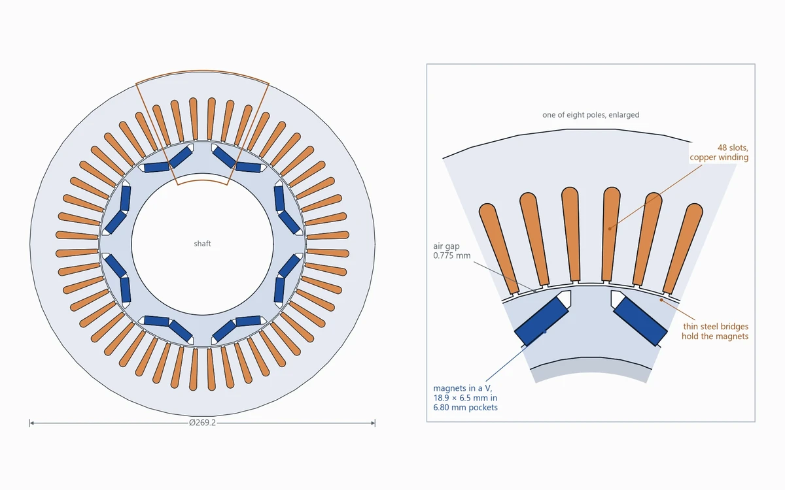
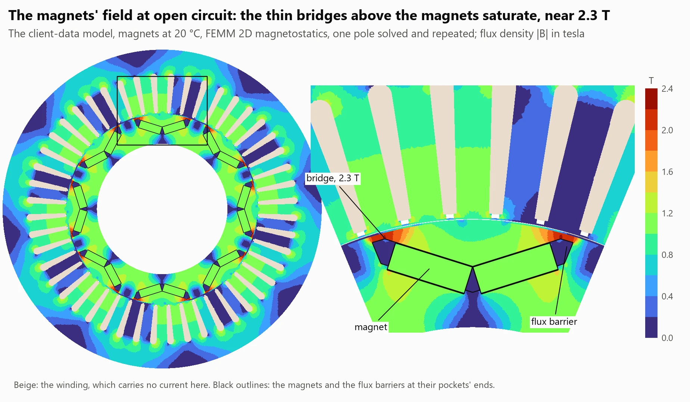

01 · Electric machines
Traction motor, modelled from client data and checked against test
Can open-source tools model a production traction motor well enough for design work, judged against its test data?
18 %above the laboratory's test
A production traction motor, modelled from its drawings and parts list with nothing tuned. The model read high on back-EMF and torque, and I traced it, cause by cause, to the magnets.
What the checks caughtA library model that wasn't the motor it was named after
Closed, with client questionsRead the study →

